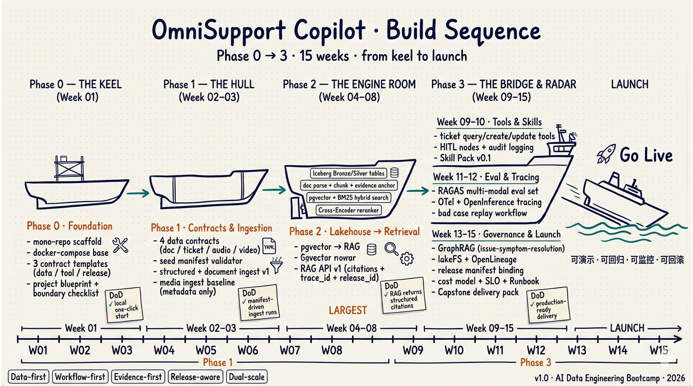
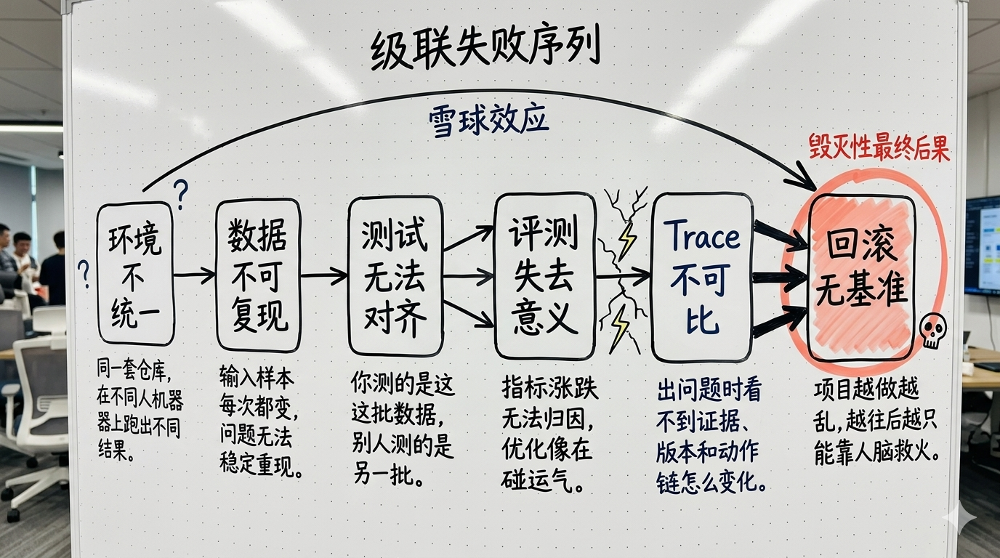
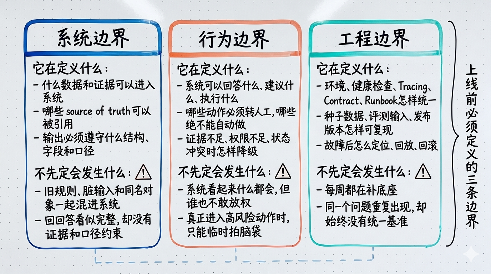
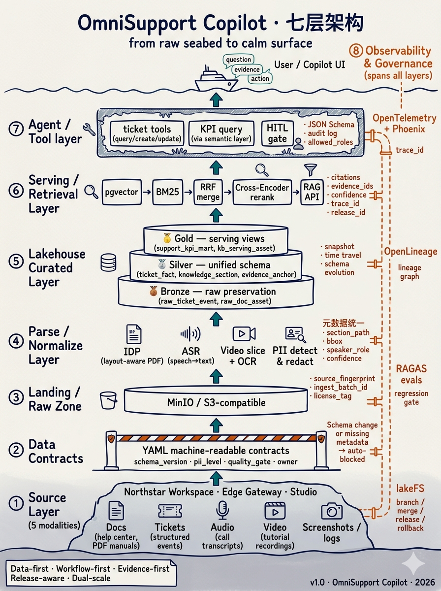

项目能不能开工，先看基线和边界定没定
一句话结论
本讲唯一主判断
企业级 AI 项目最怕的，不是第一天效果差，
而是第一天就没有统一工程基线。
而是第一天就没有统一工程基线。
没有这条基线，后面每一周做得越多，返工越大，责任边界也会越来越糊。
冲突开场：E1042 为什么不是一个“回答”问题
Demo 级系统通常会怎么做
- 去文档里检索
E1042、rollback、gateway upgrade - 拼出一段看起来合理的处理建议
- 回答“建议先回滚，再检查依赖版本”
- 现场演示时，这个答案往往已经够像“会做事”
生产级系统还必须继续判断什么
- 当前客户的
SLA等级和订阅权限是什么 - 这条产品线是否允许自动触发工单或回滚动作
- “回滚”是不是高风险动作，是否必须进
HITL - 回答是否必须带证据锚点、
trace_id、release_id - 是否需要同步写入审计日志
冲突收口
企业 AI 的难点不在回答，而在负责。
Week01 要做的，不是先把功能写多，而是先把系统能负责到什么程度写清楚。
先看项目全貌：OmniSupport Copilot 到底是什么
它到底要交付什么
项目定义
- 面向企业支持场景，而不是开放域聊天
- 支持问答、证据引用、工单联动、人工介入
- 后面再补评测、Tracing、版本与回滚
它为什么不是只靠 PDF 问答
业务世界观
- 帮助中心、FAQ、Release Notes、API 文档、工单
- 安装手册、规格说明、接线图、故障排查视频
- 教学视频、录屏教程、错误码手册、社区问答
它凭什么能贯穿 15 周
实施原则
Data-first / Workflow-first / Evidence-first / Release-aware / Dual-scale
Week01 先立统一蓝图、工程基线、风险边界和验收口径，后面 14 周再逐层补齐能力。
OmniSupport Copilot 的整体构建序列
15 周构建路线图

Week01 不是孤立的开营课，而是 Phase 0 - The Keel：先把 mono-repo、compose 基线、contract 模板、项目蓝图和边界清单立住。
为什么 Week01 就要先定工程基线
级联失败序列

如果 Week01 不先定义工程基线，问题不会只停在环境层，而会沿着复现、测试、评测、Trace 到回滚一路传导。
三类边界：工程基线真正要写的东西
三条边界图

工程基线不是一组目录，而是上线前必须先定义的三条边界：系统边界、行为边界、工程边界。
项目骨架不是目录树，而是生产问题映射：先看底座四层
| 目录 | 在课程里的职责 | 它解决的生产问题 |
|---|---|---|
infra/ |
环境统一与基础依赖 | 为什么别人机器上跑不起来？ |
contracts/ |
输入输出与动作约束 | 哪些规则只是口头说的，没有被系统执行？ |
pipelines/ |
数据资产加工与编排 | 输入输出怎么可回放、可重试、可追溯？ |
services/ |
RAG 与工具服务化 | 能力如何暴露成稳定接口，而不是散落脚本？ |
项目骨架不是目录树，而是生产问题映射：再看负责四层
| 目录 | 在课程里的职责 | 它解决的生产问题 |
|---|---|---|
observability/ |
Tracing / Phoenix / dashboards | 出问题时如何定位证据、版本、动作链？ |
evals/ |
评测集与回归机制 | 这次优化到底有没有真的变好？ |
runbooks/ |
运维与故障处理手册 | 事故发生后，谁按什么步骤恢复？ |
blueprints/ |
落地蓝图与共识文档 | 团队和后续实现凭什么对齐世界观？ |
七层架构：从输入到负责
七层总图

真正的企业 AI 系统不是只靠检索和生成两层支撑，而是从 source、contract、raw、parse、lakehouse、serving、agent 到 observability & governance 的完整工程链。
五步工程基线：前三步先把运行底座站住
01 配置隔离
.env.example 共享字段契约，机密不写死在代码里。
02 环境同构
用同一套 Compose 启动服务、网络、卷与依赖。
03 能力可验
先看关键能力是否可达，而不是只看进程有没有启动。
这三步先站住
先把环境和能力跑成共同基线，再谈后面的复现、测试和上线。
五步工程基线：再补后两步，系统才可复现可检查
04 输入可复现
准备稳定种子数据，给测试、演示和回归共用。
05 边界可检查
契约测试先入场，让系统边界能被自动化检查。
一句话收口
Week01 的基线演示，本质上是在演示五个工程承诺。
配置隔离、环境同构、能力可验、输入可复现、边界可检查，缺一项，后面的协作和验收就没有共同基准。
风险边界：先把系统允许做什么说清楚
PII 分级
P0公共信息：可以直接使用P1低敏业务信息：脱敏后使用P2高敏客户信息：工具侧受控读取P3强敏感信息：禁止进入模型上下文
动作边界
- 可执行：知识查询、工单状态查询
- 受限可执行：创建工单、更新低风险字段
- 高风险动作：回滚生产配置，必须进
HITL - 禁止动作：越权查看敏感订阅、跳过证据直接下结论
HITL 不是系统失败，而是系统知道什么时候该停
HITL triggers
高风险操作 / 证据不足 / 状态冲突 / 权限不足
HITL 不是系统失败，而是系统知道什么时候不该自己做决定。真正的成熟，不是“什么都自动做”，而是该停的时候会停。
一句话判断
系统最危险的状态，不是它不会做事，而是它不知道什么时候应该把决定权交还给人。
风险边界：真正要管的是系统行为，而不是法务附录
01 PII 分级决定什么能进模型，什么必须停在模型外。
02 动作边界决定系统能查到哪一步、能做到哪一步。
03 HITL 负责在高风险、不确定和冲突时把决定权还给人。
Week01 要交的两份工件
本讲小结：Week01 解决的是“有没有资格开工”
01 工程基线不是目录树，而是边界条件。
02 风险边界不是法务附录，而是系统行为开关。
03 落地蓝图不是汇报材料，而是后续实现与验收的共同基准。
Week02 过桥：下一周开始先问输入配不配进系统
Week01 先把系统有没有资格开工说清楚了
进入 Week02 后，问题就会进一步收紧成输入门禁：
不是“先接一点数据试试看”，而是先回答：
- 哪些输入资产能进系统
- 哪些规则要写成契约
- 哪些采集动作必须带着边界进入